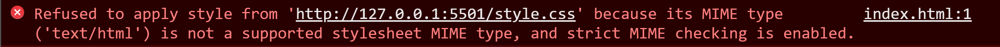
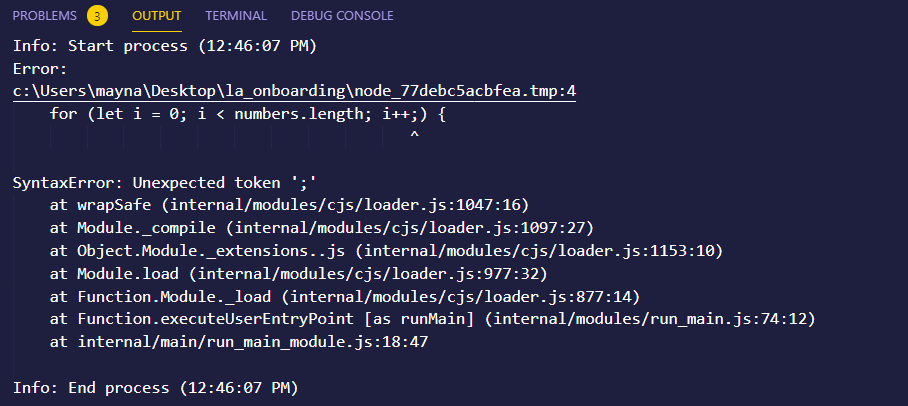
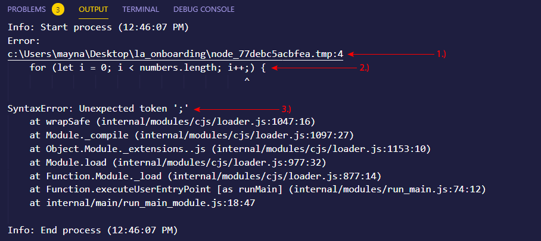
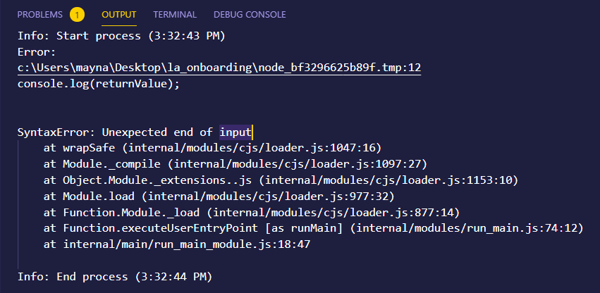
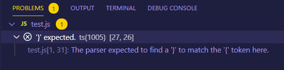

Learning Assistant Onboarding
New Hire Checklist
*Please reach out to Robbie Hyatt (rhyatt@elevenfifty.org) or your assigned orientation instructor if you do not have access or have not completed one or more of the following items.*
- Paperwork – W9 filled out and submitted to finance department (tdailey@elevenfifty.org)
- Sign up for bill.com
- Outlook email set up
- Zoom account set up
- Added to Microsoft Teams (EFA, Learning Team, Coding Team, LA Team, Specific Language)
- Learning Assistant access to Learning Gym
- Added to necessary Canvas courses – including “Instructional Resources”
- Learn how to track prework progress for new classes
- Meet with instructor of class to discuss class expectations/assistance
Getting started helping students and debugging
Debugging can be tricky - but there are a few things that you can do to improve your own bug hunting skills, as well as help new programmers adequately read and understand the error messages they're receiving.
The first step in debugging code is simply figuring out what the problem is. Sometimes this is obvious - the error message will point to a specific line of the program, and if you look at the error description and the line of code it's pointing to, you can often see the problem.
But not always. Sometimes the line that triggered the problem is simply the first place where a flaky value produced elsewhere gets used in an invalid way.
To successfully debug a program, we first need to know what type of error we're receiving to know what we need to do to fix it.
With JavaScript, most of our errors fit into two categories: syntax errors and runtime errors.
Syntax Errors
The most common source of errors for new programmers is syntax errors.
A syntax error is a problem with the grammar in our code. Syntax errors mostly come in the form of misspelled keywords, missing or open brackets, or missing parentheses or punctuation
Let's look at a few examples of syntax errors
Example 1
A students CSS is not being pulled in to their application, and they're receiving the following error in their console:
So where do you go from here? Since we know that the CSS file is not being imported correctly, we can ask ourselves the following things:
- What is the name of the CSS file?
- Where do we reference the CSS file in the code, and does the code match the file name iteself?
When working with syntax errors, it's extremely important to read line-by-line, letter-by-letter, and to cross reference for any discrepancies.
Looking at our files, we can see that our CSS file is named styles.css.
We can now cross reference our code to make sure what we're importing matches our file named styles.css
<head>
Interview
</head>
Notice on line 5, where we're referencing our CSS file, that we have a typo - our file name and import of that file do not match. Typos are extremely easy to overlook, so again, be sure to read line-by-line & character-by-character!
Example 2
A student asks you to look at the following block of code, as they are receiving some errors and not getting the output they expect:
function displayEvenNumbers() {
let numbers = [1, 2, 3, 4, 5, 6, 7, 8];
let evenNumbers = [];
for (let i = 0; i < numbers.length; i++;) {
if (numbers[i] % 2 === 0) {
evenNumbers.push(numbers[i]);
}
return evenNumbers;
}
let returnValue = displayEvenNumbers(); // should return [2,4,6,8]
console.log(returnValue);
Although Visual Studio Code is extremely helpful and will point out some snytax errors in the code, that's not always the case. Syntax errors - especially in larger blocks of code - are very easy to overlook, so always have students run their code for you as a starting point so you can see what errors they are receiving.
When running the code block from the previous slide, we're presented with the following error message:
Notice that we are receiving a syntax error - we have an unexpected token of ';' at the end of the for loop.
Lets break down the above error message in a bit more detail:
- 1.) This is the relative path of the file where the code is breaking. The number at the end of the path (4 in this case), denotes the line in which the code is actually breaking.
- 2.) This shows us the actual line of code that is breaking. Notice the carrot (^) at the end of the loop - this denotes the problem that was identified in the code.
- 3.) This line tells us what type of error we received (syntax error in this case), and what that syntax error is - we have an unexpected token of ';'.
Putting together the information we gathered above from the error message, we now know that we have a syntactical error of unexpected token on line 4 of our code, and the unexpected token we're looking for is a semi-colon ';' at the end of our for loop. If we go back to our code now, we should know exactly where to look to fix the error.
function displayEvenNumbers() {
let numbers = [1, 2, 3, 4, 5, 6, 7, 8];
let evenNumbers = [];
for (let i = 0; i < numbers.length; i++;) {
if (numbers[i] % 2 === 0) {
evenNumbers.push(numbers[i]);
}
return evenNumbers;
}
let returnValue = displayEvenNumbers(); // should return [2,4,6,8]
console.log(returnValue);
Just like our error message said, we have have an unexpected token of ';' at the end of the for loop - so let's take that out. After fixing an error, always re-run the code to make sure there are no additional errors.
After re-running the code, we're still receiving an error:
Unfortunately, this error message doesn't give us a lot of information. The error message we're receiving says that the error is coming from our console.log statement - even though everything is structured correctly and we're referencing a valid variable. We can now follow the reverse chain of events to narrow down where exactly the problem is coming from:
- Error is coming from console.log statement
- console.log statement is referencing a valid variable
- Since the variable being referenced is valid, we need to go look at the variable itself. The variable of 'returnValue' holds the call to the function of displayEvenNumbers() - pointing us to the function as the cause of the problem - we now know the problem is within the function itself.
Alternatively, we can also check out the PROBLEMS tab for any useful information:
This gives us a bit more information as to what the problem within the function actually is. The error we receieved was, "The parser expected to find a '}' to match the '{' token here" - which tells us that we're missing a closing curly brace.
Looking back at our code, we can now double check each instance of our opening curly braces to make sure we have a closing curly brace to match, starting with the outermost scoped body:
function displayEvenNumbers() {
let numbers = [1, 2, 3, 4, 5, 6, 7, 8];
let evenNumbers = [];
for (let i = 0; i < numbers.length; i++;) {
if (numbers[i] % 2 === 0) {
evenNumbers.push(numbers[i]);
}
return evenNumbers;
}
let returnValue = displayEvenNumbers(); // should return [2,4,6,8]
console.log(returnValue);
Notice that we're missing a closing curly brace for the for loop. This is also where the structure of the code is extremely important - it's much easier to spot missing brackets or braces if the code is structured properly.
Including a closing curly brace for the for loop will successfully debug the code.
Additional Debug Information
- Have students properly structure the code so it's easy to read and understand.
- It’s possible for a program to run without throwing an obvious error, but still contain logic errors which cause it to behave differently than expected. Often these kinds of errors are more subtle and harder to identify. One key strategy is to insert extra console.log statements at various points in the program to find out what the program is doing at each point.
- We often see students try to write the whole solution in one go, and then get stuck because they’ve got a number of different errors in their program at the same time. Encourage students to build their solution step by step, running their program each time they add a new piece. This way, if their program stops working, they know the culprit was the last piece that was added and where to look for issues in the code.
- Also called rubber duck debugging, this technique has you or the student explain what the code is doing line-by-line to each other or an inanimate object (like a rubber duck) - this is especially helpful for students when they don't have someone to walk through their code with them. The idea is that the process of describing each line of the program explicitly helps the describer pay closer attention to small details and assumptions, and can help them see solutions that they missed before.
Learning Gym Information
- During the time leading up to a new class, put office hours in the
Learning
Gym to assist incoming students with prework
- Be sure to send a Slack message to the class in the general channel informing them of when you have office hours, so they know help is available
- All students should have access to the Learning Gym after orientation
- Once class begins, please still put office hours in the Learning Gym in order to offer extra help to not only your current students, but students in other classes as well
Additional Information
- All LAs can bill up to 45 hours per week
- Intro to Codes are held a few times a month. Working an Intro to Code does NOT count towards your 45 hours per week. When you work an ITC, please note that on your invoice. The amount for working an ITC is $150